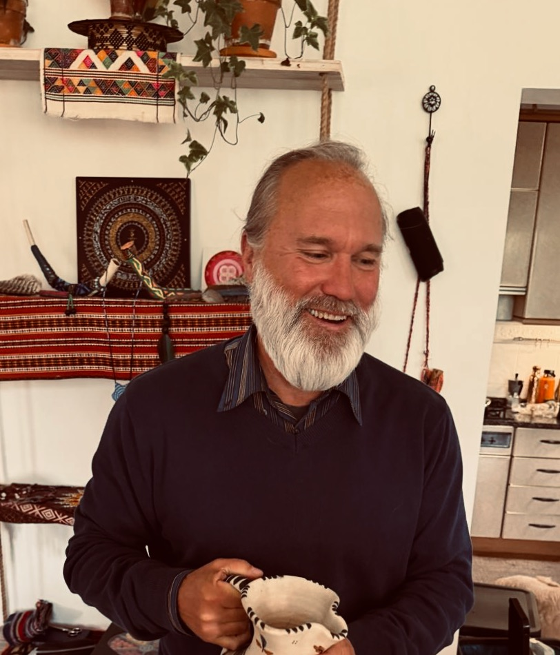

Joshua Fouts
Archetypal Astrologer & Depth Psychology Counselor
The most important relationship
you will ever have is with yourself.
Counseling and archetypal reflection for people seeking to understand their inner life, integrate profound experiences, and move toward greater authenticity.
Offerings
How I Can Help

Psychedelic Integration Counseling
Support for making meaning after significant psychedelic or plant medicine experiences. Together we explore what was revealed, what remains difficult to name, and how the experience can be integrated with care into ordinary life.
Depth Psychology Counseling
A reflective counseling approach informed by Jung, Hillman, dreamwork, myth, symbol, and the archetypal imagination. The work is slow enough to listen for what the psyche is trying to say.
Archetypal Astrology
With more than 40 years of astrological study and practice, I offer counseling sessions that explore archetypal patterns, life passages, and the symbolic language of the planets as they move through your birth chart and lived experience.
Plant Medicine Integration Coaching
Drawing on nearly 20 years of relationship with Indigenous plant medicine communities across multiple traditions, I help people weave ceremony insights into daily life with respect, discernment, and responsibility.

About
Joshua Fouts
I am trained in depth psychology at Pacifica Graduate Institute in Santa Barbara, California, a tradition rooted in the work of Jung, Hillman, and the archetypal imagination.
Based in Helsinki, Finland, I work as a counseling astrologer and integration counselor, offering sessions both in person and online, in English and Portuguese.
I have practiced astrology for more than 40 years and have spent nearly 20 years in relationship with Indigenous plant medicine communities across multiple traditions. These long apprenticeships with symbolic, psychological, and sacred plant knowledge inform the way I accompany people.
My work is not about diagnosis or prescription. It is a conversation: careful attention to the patterns, images, dreams, questions, and experiences that ask to be understood.
“Finding the right counseling relationship can make healing feel possible.”
Get in Touch
Begin the Conversation
Available in English and Portuguese, in person in Helsinki, Finland, or online. If you feel drawn to this work, send a short note and we can explore whether a conversation would be useful.
josh.fouts@gmail.comPlease include a few lines about what brings you here and whether you are interested in astrology, integration support, or depth psychology counseling.